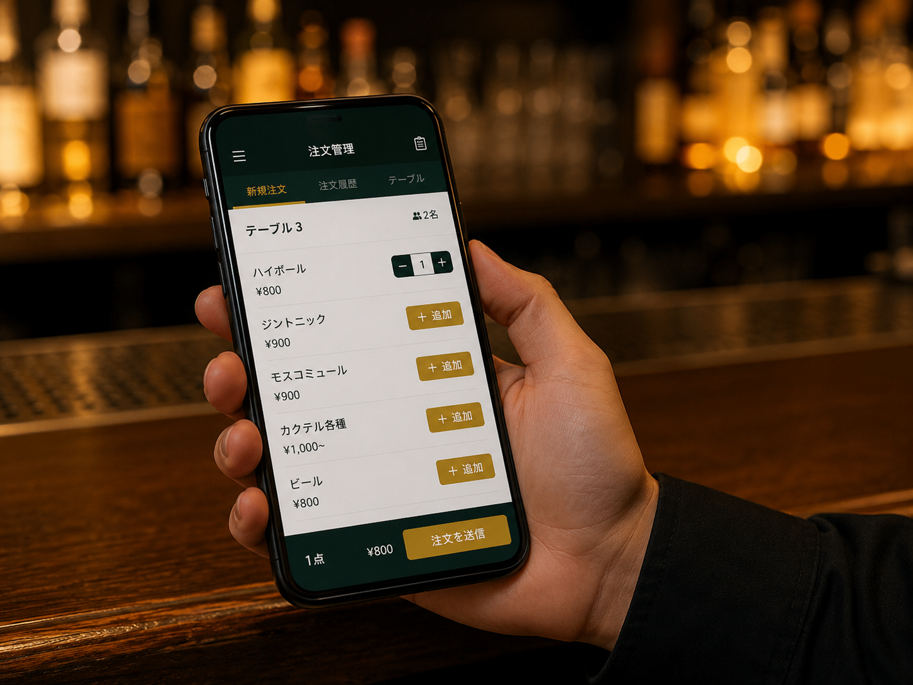
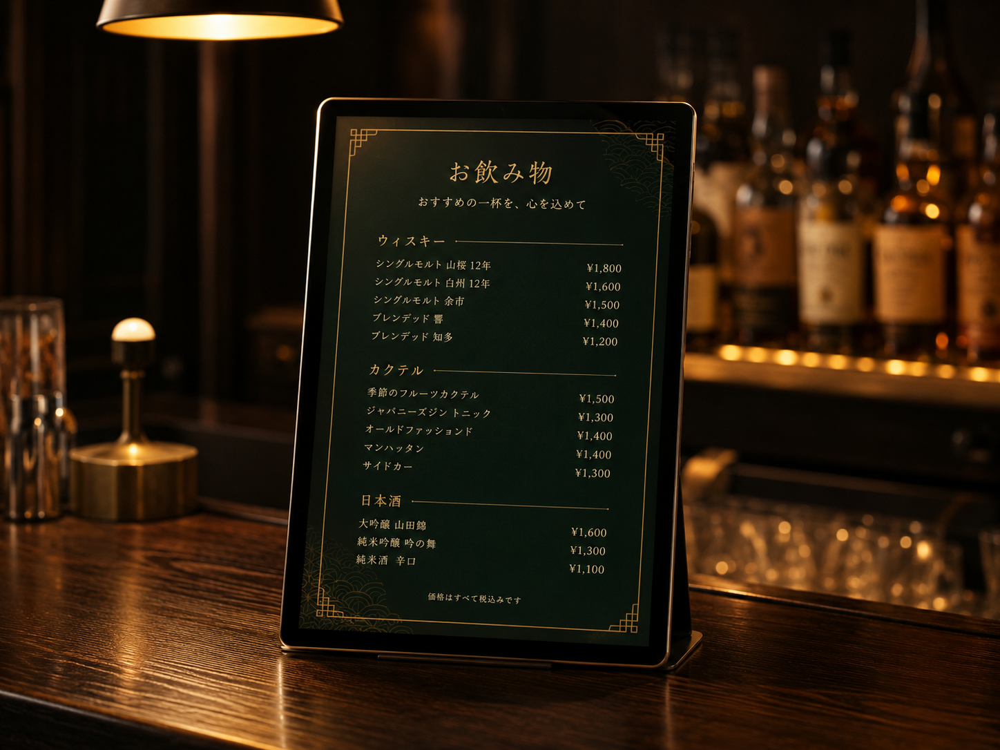
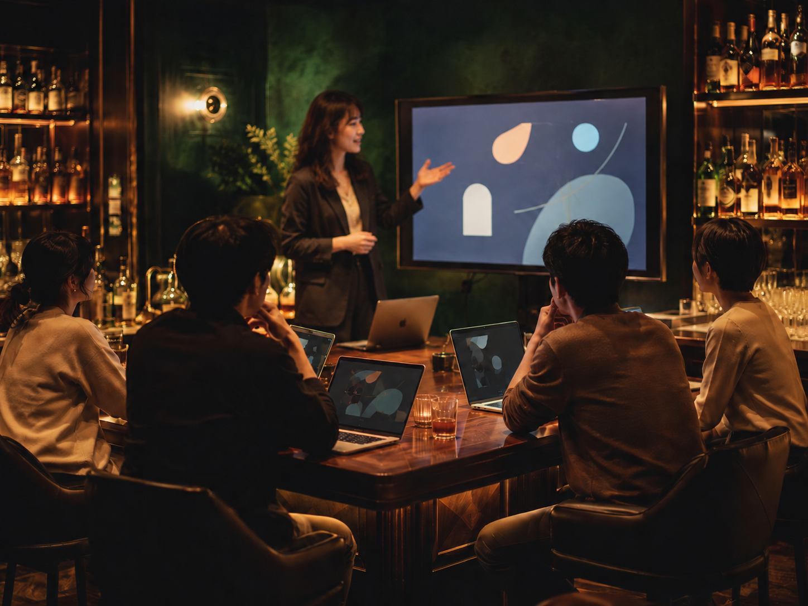
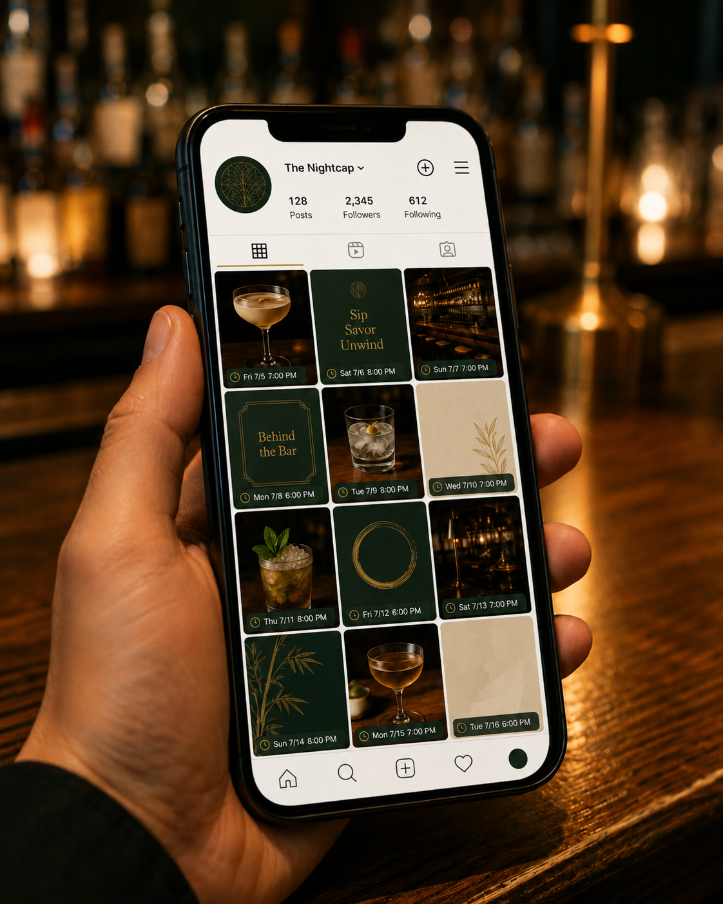
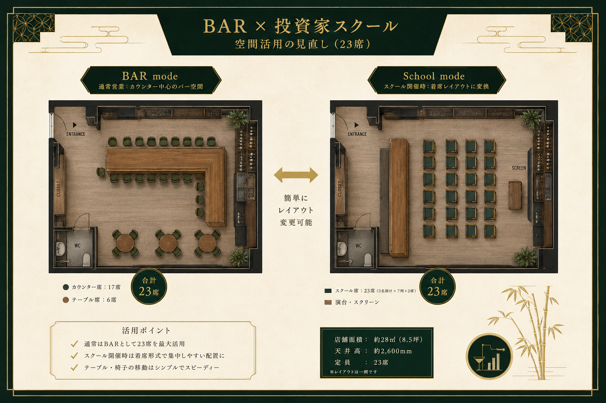

本資料は、飲食店舗と教育コミュニティを兼ねる事業者に向けて作成したAI活用提案書を、公開用に匿名化・再編集したものです。
注文管理、メニュー更新、SNS運用、講座化、空間活用など、現場の負荷を下げながらブランド価値を育てるための初期提案を5案に整理しています。
| 対応課題 | 手書きの注文票を、スタッフが迷わず使える管理方法へ変えたい |
|---|---|
| 進め方 | 独自アプリを開発せず、既存サービスを組み合わせて店舗運用に合わせる |
| 期間目安 | 2〜3週間（設計・試験導入・調整） |
| 位置づけ | 検証フェーズの無償提案 |
まずは小さく試し、現場で使えるかどうかを確認します。足りない部分が見えたら、次の改善相談へつなげます。

| 対応課題 | 印刷メニューの張り替えや更新作業を減らしたい |
|---|---|
| 進め方 | タブレットやデジタル表示を使い、画像・文章を更新しやすい状態にする |
| 期間目安 | 2週間程度（機材選定・表示設定） |
| 位置づけ | 店舗オペレーション改善の入口 |
更新のたびに印刷する手間を減らし、季節メニューやイベントにも対応しやすい状態を目指します。

| 対応課題 | AIをどう事業や顧客接点に活かせるか分からない |
|---|---|
| 進め方 | 既存の入門講座と重ならないよう、制作・資料化・デザイン活用に絞る |
| 期間目安 | 開催時期決定後、1回45分程度 |
| 位置づけ | コミュニティ価値を高める接点づくり |
店舗の顧客やコミュニティ参加者にとって、学びの体験そのものがブランド価値になる可能性があります。

| 対応課題 | 投稿文や発信タイミングを毎回考える負担を減らしたい |
|---|---|
| 進め方 | 投稿の型、下書き、確認手順を整え、最終判断に集中できる状態へ近づける |
| 期間目安 | 2週間程度（現状確認・型づくり） |
| 位置づけ | 発信継続のための運用設計 |
AIに丸投げするのではなく、店舗らしさを保ちながら運用負荷を下げることを重視します。

| 対応課題 | 同じ空間を、通常営業と講座・イベントの両方で機能的に使いたい |
|---|---|
| 進め方 | 営業時間、開催時間、レイアウト、導線を整理し、切り替えやすい配置案を作る |
| 期間目安 | 3〜4週間（現状把握・案作成・試行） |
| 位置づけ | 空間そのものをブランド資産にする設計 |
レイアウト変更を伴うため、他の改善案と並行して相談を始める想定です。

この提案は、単なるAIツール導入ではなく、店舗の運営負荷、顧客接点、発信、空間活用をまとめて整えるBrandOpsの検証ケースです。
現時点では提案フェーズであり、公開ページでは業種・課題・提案構造のみを共有しています。